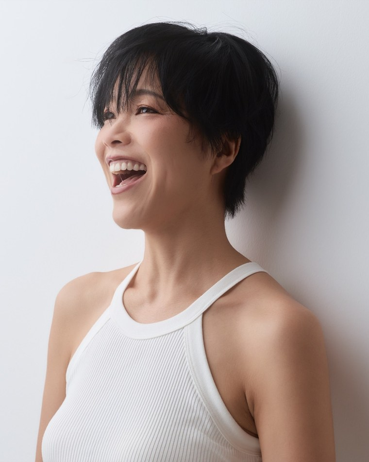

ドイツから延べ1900人以上に伝えてきた、
高くても選ばれる届け方を、
無料の教材にまとめました。
ドイツ大学院と食品研究所でオーガニック研究開発
創業7年・日本最大のオーガニックコミュニティ運営
オーガニック企業大手「ビオセボン」年間社員研修担当

良いものなのに、値段で比べられる。安くする以外、返し方が見つからない。
その答えは、値引きでも広告でもなく「教えること」でした。
中身は全部、ここに置いています。
無料教材は、メールマガジンでお届けします
無料教材は、ご登録いただいたメールアドレス宛に、メールマガジンでお届けします。メールが届かない場合は、迷惑メールフォルダをご確認ください。
このあと、オーガニックの届け方についてのメールをお送りします。配信はいつでも解除できます。
CONTENTS
BEFORE
値段の話になると、
安くする以外の返し方がない
AFTER
同じ説明でも、
「高くても欲しい」と言われる
CHECK
WHY
本を読んで、講座に出て、認証の資料も読み込んで、発信も続けてきた。それでも「自信を持って、これです」と言い切れない。
足りないのは、努力ではありません。
オーガニックは、種から生産、加工、流通、そして食卓までが1本につながっている分野です。どこか一箇所だけ詳しくなっても、全体の判断はできません。断片をいくら集めても、基準にはならない仕組みになっています。
そして日本では、この全体像を体系で教える場所が、ほとんどありませんでした。誰かが隠してきたのではなく、教育で扱われてこなかった。それだけのことです。
MATERIALS
このほか、これまでの音声・書籍・動画から、届け方に直接効くものを選んで同じページに置いています。教材は随時追加していて、追加のたびに同じページが新しくなります。
AFTER
順番はこのとおりです。3から始めても、届きません。
ACHIEVEMENTS
1,900名+
コース受講生延べ
2019
ドイツにて設立
No.1
日本最大のオーガニックコミュニティ
PROFILE

レムケなつこ
南ドイツ・バイエルン州在住／オーガニック専門家
ボリビアでJICA青年海外協力隊として、メキシコでJICA専門家として、途上国の生産者支援に携わりました。そこでオーガニックの社会的な意義に気づき、いまはドイツで学校を運営しています。
教えているのは、認証の知識だけではありません。自分が信じているものを、値段で比べられない形で届けるところまでを、一続きにして渡しています。
ORIGIN
20代、JICA青年海外協力隊としてボリビアへ渡りました。担当地域だけ、栄養失調や依存症、乳児死亡率が突出して高い。共通していたのは、大規模サトウキビ農園で働く出稼ぎ労働者たちでした。
帰国後に知ったのは、そのサトウキビの多くが白砂糖になり、当時の日本はその6割を輸入していたという事実です。加工食品や飲料を通じて、自分自身が知らないうちにその仕組みの一部になっていました。
なんとかしたい一心で、海外の論文を読み漁るなかで出会ったのが「オーガニック」という仕組みでした。研究を深めるため、有機農業の本場であるドイツの大学院へ。そこで、オーガニックなら社会の構造を変えられるという確信に変わりました。
ドイツIOBオーガニックスクールは、その確信から生まれています。
MISSION
オーガニックが広がることが、
社会を豊かにする。
オーガニック起業家が豊かになるということは、素晴らしいものを市場に循環させ、オーガニックを広げているということ。事業というツールを使ってオーガニックを広げる人は、その地域の水・土・生態系を守り、未来世代のことを思っている人です。
地域は全世界とつながっているから、それは地球全体の未来、私たちの未来そのものを守っていることでもある。だから、彼ら彼女らが豊かになることが決定的に大事だと思っています。
BOOK

レムケなつこ 著
★ Amazon Kindle 総合1位獲得
「オーガニックを事業に取り入れたいけれど、自分の知識に自信がない」
「オーガニックのよさを伝えたいけれど、うまく説明できない」
「社会をよくしたい想いはあるものの、どう行動すべきかわからない」
―― そんな起業家やプレ起業家へ向けて、ドイツで15年積み上げてきたオーガニックのエビデンスと、「すべての命が幸せになる仕組み」としてのオーガニックを、入門書として一冊にまとめました。
Amazonで購入する →※ 書籍卸価格についてのお問い合わせは hi@iob.bio までお寄せください。
JOURNEY
サロンや教室での実績はあるのに、オーガニックのことだけは「まだ素人なので」と言ってしまう。エビデンスや資格を求めて、情報だけを一人で集めている。
同じ問いを持つ仲間の中で、断片だった知識が体系につながっていく。9割以上の受講生が、他の受講生との交流を希望しています。
値段で比べられない届け方を、自分の言葉で語れるようになる。数字やフォロワー数を追わなくても、事業を続けていける。
ABOUT
すべて無料です。受け取ったあと、届け方についてのメールをお送りします。読むだけでも十分に使えるものにしています。
この先に、体系立てて学べる有料のコースもありますが、まずはここに置いたものを持って帰ってください。
無料教材は、メールマガジンでお届けします。
配信はいつでも解除できます。